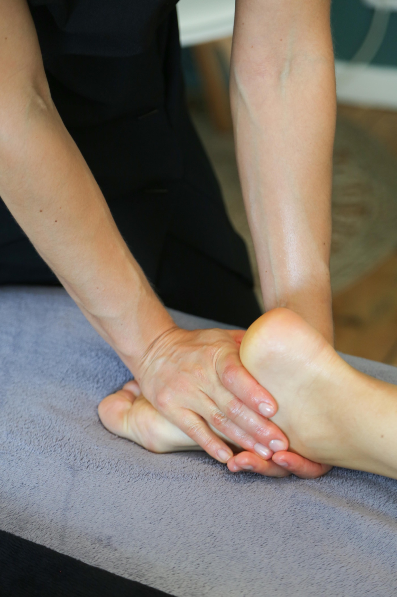

Avec l'expérience, on comprend que la qualité d'un massage ne repose pas uniquement sur la technique. Il y a quelque chose de moins visible, mais qui fait toute la différence : la présence du praticien. Cette capacité à être pleinement là, à observer, à écouter et à s'adapter à la personne que l'on reçoit.
Masser, ce n'est pas simplement enchaîner des gestes.
Lorsqu'on débute dans le massage bien-être, on a souvent tendance à beaucoup réfléchir.
On se concentre sur le protocole, on essaie de ne rien oublier, on pense à la prochaine manœuvre et on vérifie mentalement que tout est dans le bon ordre. On essaie de corriger ses postures.. C'est normal, et c'est même une étape indispensable de l'apprentissage. Je vous en faisait déjà part dans mon 1e article sur la reconversion dans le massage cet été (https://www.hominisens.com/articles/se-reconvertir-dans-le-massage-bien-etre-par-ou-commencer.html)
Mais avec la pratique, les gestes deviennent plus naturels. On commence alors à pouvoir accorder davantage d'attention à ce qui se passe réellement sous nos mains. La respiration de la personne, ses réactions, ses tensions, son lâcher-prise… On ne masse plus uniquement un corps en suivant un protocole. On accompagne une personne, avec ses particularités et ses besoins du moment.
La qualité du toucher commence par l'écoute.
Être présent pendant un massage, c'est observer sans être intrusif et rester attentif aux réactions de la personne. C'est écouter ce que la personne dit et observer sa communication non verbale. C'est ressentir si une pression qui semble adaptée à un client ne le sera pas forcément pour un autre. Un rythme apprécié lors d'une séance peut nécessiter quelques ajustements lors de la suivante. C'est là que l'écoute corporelle prend tout son sens.
Et finalement, c'est souvent cette attention aux petits détails qui rend un massage vraiment agréable.
La présence, ça s'apprend aussi
On pourrait penser que cette qualité est innée, que certaines personnes auraient naturellement un meilleur toucher que d'autres. Je pense plutôt qu'elle se développe avec l'expérience, la pratique et la capacité à se remettre en question.
Apprendre à masser, c'est aussi apprendre à être attentif à sa propre posture, à sa respiration, à ses déplacements et à son état de concentration. Un praticien pressé, préoccupé ou constamment focalisé sur la prochaine manœuvre aura parfois du mal à trouver cette fluidité.
Prendre le temps de se recentrer avant une séance, de préparer son espace et d'accueillir réellement la personne fait aussi partie du métier. C'est un ensemble de petites attentions qui contribuent à la qualité de l'expérience.
Pourquoi la transmission est-elle si importante en formation ?
C'est un aspect auquel je suis particulièrement sensible lorsque j'accompagne mes stagiaires en formation massage bien-être. Bien sûr, il faut apprendre les techniques, comprendre les gestes et maîtriser les protocoles. Mais j'aime aussi les amener à se poser d'autres questions :
Est-ce que ma pression est adaptée ? Est-ce que mon mouvement est fluide ? Est-ce que je suis attentif à la personne que je masse ? Est-ce que je prends le temps de ressentir ce que je fais ?
Ce sont des choses qui ne s'apprennent pas simplement en regardant une démonstration. Elles se construisent avec la pratique, les corrections, les échanges et le temps passé à masser.
C'est aussi pour cela que j'accorde autant d'importance aux formations en petits groupes : pouvoir observer chaque stagiaire, prendre le temps de corriger un geste et transmettre ces petits détails qui font évoluer une pratique.
Finalement, qu'est-ce qui fait un bon massage ?
La technique est indispensable. Elle donne au praticien ses repères, sa structure et sa sécurité. Mais ce qui rend un massage particulier, c'est aussi cette capacité à être pleinement disponible, à ne pas simplement reproduire des gestes, mais à les réaliser avec intention et attention.
Deux praticiens peuvent apprendre exactement le même protocole et proposer deux expériences très différentes. Et c'est peut-être là toute la richesse de ce métier : apprendre une technique, puis progressivement y apporter sa sensibilité, son expérience et sa personnalité.
Chez HominiSens Formations, à Mouvaux près de Lille, c'est aussi cette vision du massage que j'aime transmettre : au-delà des protocoles, développer un toucher juste, attentif et respectueux de chaque personne.
présence du praticienmassage bien-êtrequalité du toucherapprendre à massertechnique de massageécoute corporelleformation massage Lilleformation massage en petit groupe